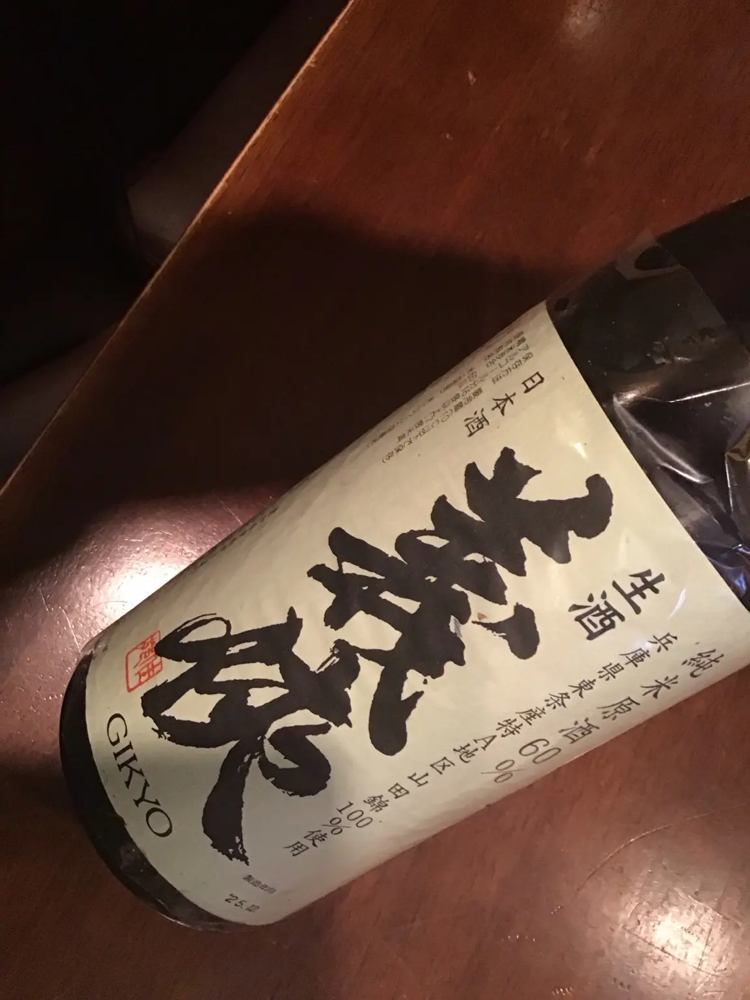

和食と合わせる一杯としてはもちろん、日本酒バーのように銘柄を選びながら楽しむ夜にも。写真と、2026年10月12日時点の日本酒リスト掲載価格をご案内します。
風の森 奈々露657

グラス 750円／一合 1,450円
義侠 山田錦60% 純米生原酒

最新版リストでは、醇酒・生酒／原酒・定番銘柄に分類しています。
グラス 750円／一合 1,350円
価格・掲載内容は2026年10月12日時点です。売切れなどによりご用意できない場合があります。最新状況はご予約時または店頭でご確認ください。